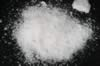

|
|
(For further information on spectroscopy, see:
http://speclab.cr.usgs.gov)
TITLE: Carnallite HS430 DESCRIPT
DOCUMENTATION_FORMAT: MINERAL
SAMPLE_ID: HS430
MINERAL_TYPE: Halide
MINERAL: Carnallite
FORMULA: KMgCl3*6H2O
FORMULA_HTML: KMgCl3•6H2O
COLLECTION_LOCALITY: Carlsbad, New Mexico
ORIGINAL_DONOR: Hunt and Salisbury Collection
CURRENT_SAMPLE_LOCATION: USGS Denver Spectroscopy Laboratory
ULTIMATE_SAMPLE_LOCATION: USGS Denver Spectroscopy Laboratory
SAMPLE_DESCRIPTION:
This sample was originally described by Hunt and Salisbury as:
"H-5. Sylvite. Carlsbad, N.M. (430B). Sylvite, KC1, has the same origin, mode of occurrence and associations as halite, but is much rarer. Like halite, it is colorless when pure, but is more often some shade of red due to ferric oxide inclusions. It may also be yellow or blue, and it has been suggested that the blue coloration is due to F-centers in inclusions of rock salt. This sample is reddish orange, and the absorption less than of 0.55 µ is due to ferric oxide inclusions. The well-defined bands in the near-infrared at 1.0, 1.23, 1.46, 1.77, 1.99, and 2.27 µ are clearly due to water of hydration. Except for a small shift to longer wavelengths these bands are essentially identical with those found in gypsum (see spectra SS-11A, B, C, D, in Part IV). The sylvite obviously contains some hydrated impurity, although it does not appear to be gypsum in this case. Most probably it is magnesium chloride hydrate, but almost any hydrate produces a set of bands similar to those displayed here."
Hunt, G.R., J.W. Salisbury, and C.J. Lenhoff, 1972, Visible and near-infrared spectra of minerals and rocks: V. Halides, phosphates, arsenates, vanadates and borates. Modern Geology, v. 3, p. 121-132.
XRD has shown this sample to be primarily Carnallite. The visible and near infrared spectral features are from Carnallite.
IMAGE_OF_SAMPLE:

END_SAMPLE_DESCRIPTION.
XRD_ANALYSIS:
45 kV - 35 mA, 6.5-9.5 keV
Reference: JCPDS #28-869
Found: Carnallite plus an unidentified reflection at 3.16-3.16
Angstroms.
Comments: All strong reflections on the JCPDS card were found. The carnallite
reflections are sharp, indicating good crystallinity. The unidentified reflection
is broad and may be a doublet.
J.S. Huebner, J. Pickrell, and T. Schaefer, 1994, written communication.
END_XRD_ANALYSIS.
COMPOSITIONAL_ANALYSIS_TYPE: None # XRF, EM(WDS), ICP(Trace), WChem
COMPOSITION_TRACE: None
COMPOSITION_DISCUSSION:
None
END_COMPOSITION_DISCUSSION.
MICROSCOPIC_EXAMINATION:
END_MICROSCOPIC_EXAMINATION.
SPECTROSCOPIC_DISCUSSION:
END_SPECTROSCOPIC_DISCUSSION.
SPECTRAL_PURITY: 1a2a3a4_ # 1= 0.2-3, 2= 1.5-6, 3= 6-25, 4= 20-150 microns
| LIB_SPECTRA_HED: | where | Wave Range | Av_Rs_Pwr | Comment |
|---|---|---|---|---|
| LIB_SPECTRA: | splib04a r 840 | 0.2-3.0µm | 200 | g.s.= |
| LIB_SPECTRA: | splib05a r 1545 | 0.2-3.0µm | 200 | g.s.= |
| LIB_SPECTRA: | splib06a r 4228 | g.s.= | ||
| LIB_SPECTRA: | splib06a r 4241 | g.s.= |
{kind=link}